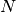

Iterative solvers¶
Most of the solvers provided in Gmm++ come form ITL with slight modifications (gmres has been optimized and adapted for complex matrices). Include the file gmm/gmm_iter_solvers.h to use them.
iterations¶
The iteration object of Gmm++ is a modification of the one in ITL. This is not a template type as in ITL.
The simplest initialization is:
gmm::iteration iter(2.0E-10);
where 2.0E-10 is the (relative) residual to be obtained to have the convergence. Some possibilities:
iter.set_noisy(n) // n = 0 : no output
// n = 1 : output of iterations on the standard output
// n = 2 : output of iterations and sub-iterations
// on the standard output
// ...
iter.get_iteration() // after a computation, gives the number of
// iterations made.
iter.converged() // true if the method converged.
iter.set_maxiter(n) // Set the maximum of iterations.
// A solver stops if the maximum of iteration is
// reached, iter.converged() is then false.
Linear solvers¶
Here is the list of available linear solvers:
gmm::row_matrix< std::vector<double> > A(10, 10); // The matrix
std::vector<double> B(10); // Right hand side
std::vector<double> X(10); // Unknown
gmm::identity_matrix PS; // Optional scalar product for cg
gmm::identity_matrix PR; // Optional preconditioner
...
gmm::iteration iter(10E-9);// Iteration object with the max residu
size_t restart = 50; // restart parameter for GMRES
gmm::cg(A, X, B, PS, PR, iter); // Conjugate gradient
gmm::bicgstab(A, X, B, PR, iter); // BICGSTAB BiConjugate Gradient Stabilized
gmm::gmres(A, X, B, PR, restart, iter) // GMRES generalized minimum residual
gmm::qmr(A, X, B, PR, iter) // Quasi-Minimal Residual method.
gmm::least_squares_cg(A, X, B, iter) // unpreconditionned least square CG.
The solver gmm::constrained_cg(A, C, X, B, PS, PR, iter); solve a system with linear constaints, C is a matrix which represents the constraints. But it is still experimental.
(Version 1.7) The solver gmm::bfgs(F, GRAD, X, restart, iter) is a BFGS quasi-Newton algorithm with a Wolfe line search for large scale problems. It minimizes the function F without constraints, be given its gradient GRAD. restart is the max number of stored update vectors.
Preconditioners¶
The following preconditioners, to be used with linear solvers, are available:
gmm::identity_matrix P; // No preconditioner
gmm::diagonal_precond<matrix_type> P(SM); // diagonal preconditioner
gmm::mr_approx_inverse_precond<matrix_type> P(SM, 10, 10E-17);
// preconditioner based on MR
// iterations
gmm::ildlt_precond<matrix_type> P(SM); // incomplete (level 0) ldlt
// preconditioner. Fast to be
// computed but less efficient than
// gmm::ildltt_precond.
// incomplete ldlt with k fill-in and threshold preconditioner.
// Efficient but could be costly.
gmm::ildltt_precond<matrix_type> P(SM, k, threshold);
gmm::ilu_precond<matrix_type> P(SM); // incomplete (level 0) ilu
// preconditioner. Very fast to be
// computed but less efficient than
// gmm::ilut_precond.
// incomplete LU with k fill-in and threshold preconditioner.
// Efficient but could be costly.
gmm::ilut_precond<matrix_type> P(SM, k, threshold);
// incomplete LU with k fill-in, threshold and column pivoting preconditioner.
// Try it when ilut encounter too small pivots.
gmm::ilutp_precond<matrix_type> P(SM, k, threshold);
Except ildltt\_precond, all these precontionners come from ITL. ilut_precond has been optimized and simplified and cholesky_precond has been corrected and transformed in an incomplete LDLT preconditionner for stability reasons (similarly, we add choleskyt_precond which is in fact an incomplete LDLT with threshold preconditionner). Of course, ildlt\_precond and ildltt_precond are designed for symmetric real or hermitian complex matrices to be use principaly with cg.
Additive Schwarz method¶
The additive Schwarz method is a decomposition domain method allowing the resolution of huge linear systems (see [SCHADD] for the principle of the method).
For the moment, the method is not parallelized (this should be done ...). The call is the following:
gmm::sequential_additive_schwarz(A, u, f, P, vB, iter, local_solver, global_solver)
A is the matrix of the linear system. u is the unknown vector. f is the right hand side. P is an eventual preconditioner for the local solver. vB is a vector of rectangular sparse matrices (of type const std::vector<vBMatrix>, where vBMatrix is a sparse matrix type), each of these matrices is of size where  is the size of A and the number of variables in the sub-domain ; each column of the matrix is a base vector of the sub-space representing the sub-domain. iter is an iteration object. local_solver has to be chosen in the list gmm::using_gmres(), gmm::using_bicgstab(), gmm::using_cg(), gmm::using_qmr() and gmm::using_superlu() if SuperLu is installed. global_solver has to be chosen in the list gmm::using_gmres(), gmm::using_bicgstab(), gmm::using_cg(), gmm::using_qmr().
The test program schwarz_additive.C is the directory tests of GetFEM++ is an example of the resolution with the additive Schwarz method of an elastostatic problem with the use of coarse mesh to make a better preconditioning (i.e. one of the sub-domains represents in fact a coarser mesh).
In the case of multiple solves with the same linear system, it is possible to store the preconditioners or the LU factorisations to save computation time.
A (too) simple program in gmm/gmm_domain_decomp.h allows to build a regular domain decomposition with a certain ratio of overlap. It directly produces the vector of matrices vB for the additive Schwarz method.
Range basis function¶
The function gmm\_range\_basis(B, columns, EPS=1e-12) defined in gmm/gmm\_range\_basis.h allows to select from the columns of a sparse matrix B a basis of the range of this matrix. The result is returned in columns which should be of type std::set<size_type> and which contains the indices of the selected columns.
The algorithm is specially designed to select independent constraints from a large matrix with linearly dependent columns.
There is four step in the implemented algorithm
- Elimination of null columns.
- Selection of a set of already orthogonal columns.
- Elimination of locally dependent columns by a blockwise Gram-Schmidt algorithm.
- Computation of vectors of the remaining null space by a global restarted Lanczos algorithm and deduction of some columns to be eliminated.
The algorithm is efficient if after the local Gram-Schmidt algorithm it remains a low dimension null space. The implemented restarted Lanczos algorithm find the null space vectors one by one.
The Global restarted Lanczos algorithm may be improved or replaced by a block Lanczos method (see [ca-re-so1994] for instance), a block Wiedelann method (in order to be parallelized) or simply the computation of more than one vector of the null space at each iteration.

目次
前のトピックへ
Dense QR factorisation, eigenvalues and eigenvectors
次のトピックへ
Download
Main documentations
- GetFEM++ User documentation
- Python Interface
- Matlab Interface
- Scilab Interface
- Gmm++
- GetFEM++ project